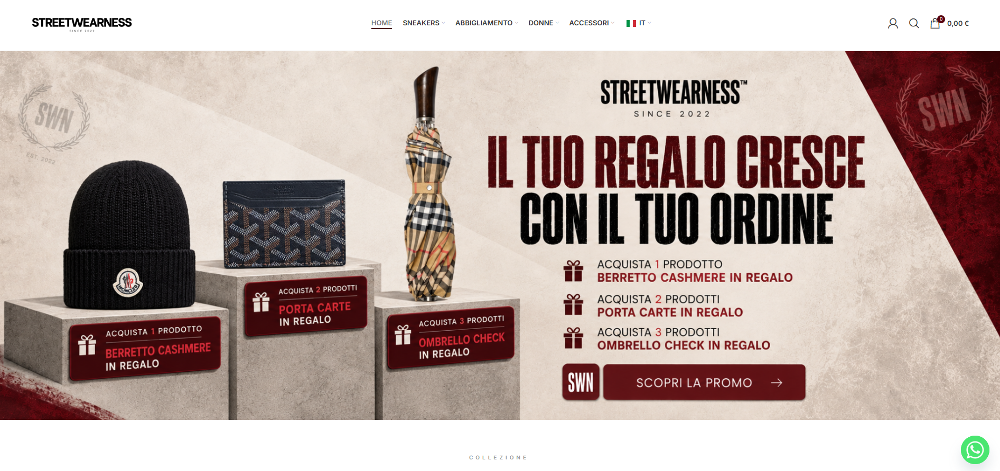
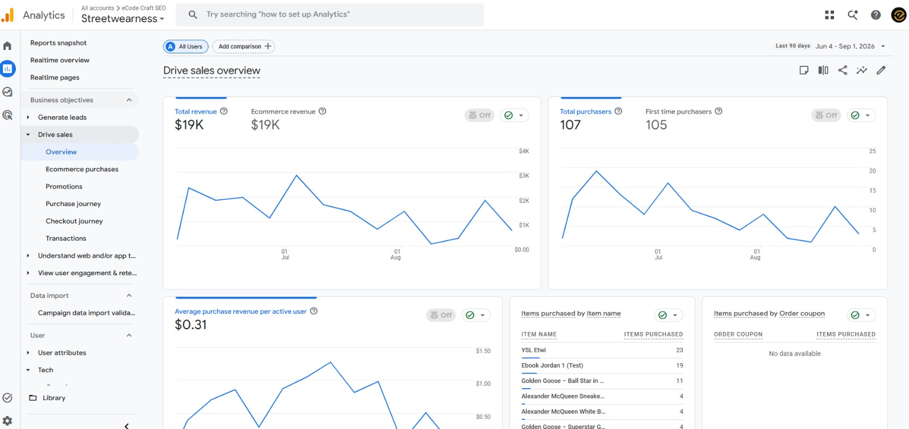
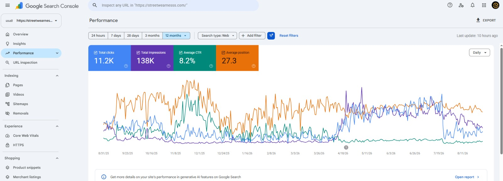
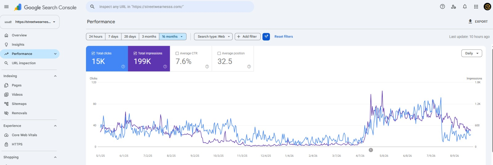
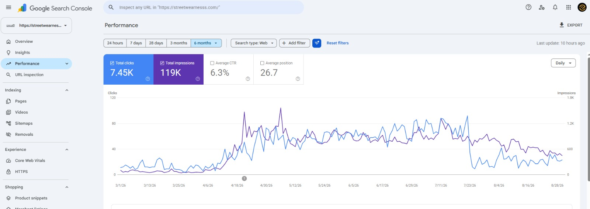
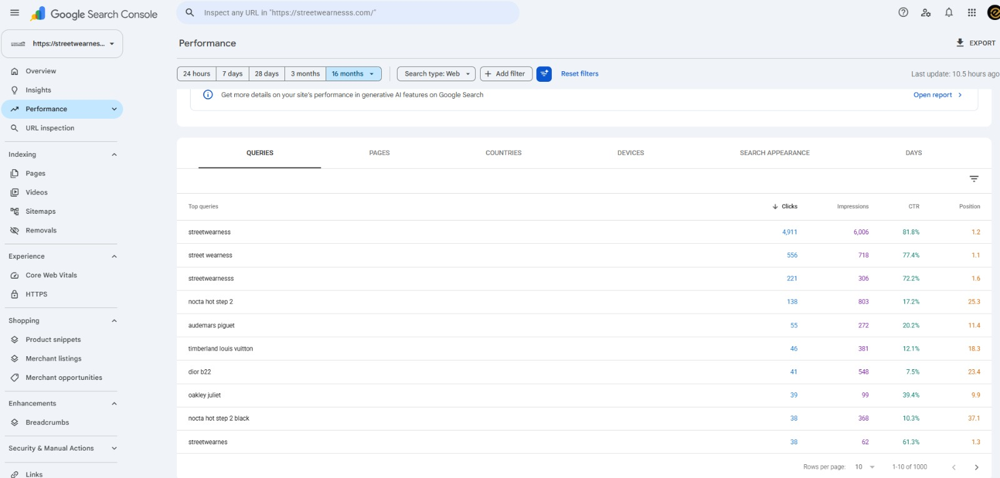
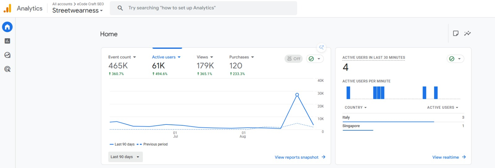
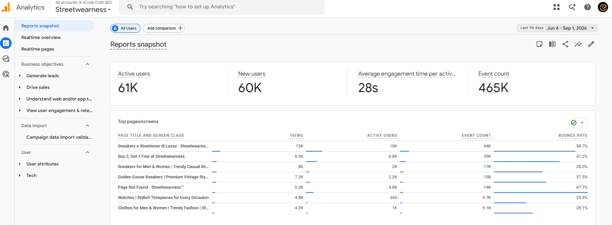
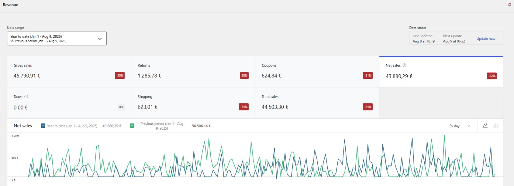
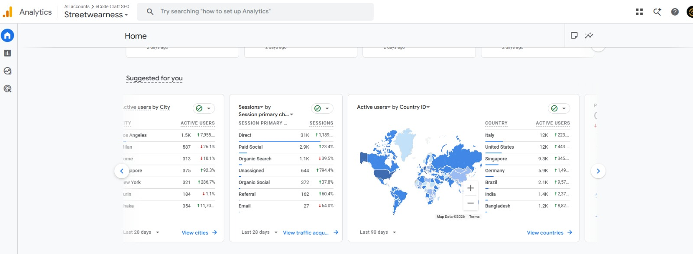

01
Highly competitive fashion keywords
The website competes for searches around sneakers, designer footwear, fashion, luxury brands, watches, and streetwear, all of which require strong commercial relevance.
Streetwearness operates in a competitive sneaker and fashion market, where branded searches, category relevance, and strong product visibility all matter. The SEO work focused on improving organic reach, supporting commercial pages, and helping the store attract more qualified users and purchases.

Streetwearness already had a broad catalog and active user interest, but stronger search visibility required clearer keyword targeting, better product and category optimisation, and tighter alignment with how customers search.
The website competes for searches around sneakers, designer footwear, fashion, luxury brands, watches, and streetwear, all of which require strong commercial relevance.
Streetwearness offers sneakers, clothing, accessories, watches, and designer products, so the site needed a clear structure across category and product pages.
Search Console showed room to grow for product-related searches including Noxa Hot Step 2, Audemars Piguet, Timberland Louis Vuitton, Dior B22, and Oakley Juliet.
Beyond impressions and clicks, the site also needed stronger support for e-commerce actions such as purchases, product views, and category engagement.
The strategy aimed to improve Streetwearness’ visibility in search while also supporting better discovery of its high-value product and category pages.
We targeted relevant commercial searches around sneakers, luxury brands, designer sneakers, streetwear, watches, and men’s and women’s fashion.
Important landing pages were improved through SEO-focused titles, headings, content, internal linking, and stronger search-intent alignment.
Search Console data was monitored continuously to identify query opportunities and improve pages already receiving impressions and clicks.
Key product and category pages were strengthened so the traffic gained through SEO could contribute more clearly to e-commerce activity and purchases.

The available Search Console and Analytics screenshots show growing organic visibility, stronger user activity, and measurable e-commerce performance across the site.




Google Analytics reported strong growth in users, views, events, and purchases, supporting the SEO gains visible in Search Console.



The audience data shows that Streetwearness is not limited to one local market. Users are coming from several international locations, providing a strong base for continued e-commerce and SEO growth.
| Country | Active Users |
|---|---|
| Italy | 12K |
| United States | 12K |
| Singapore | 9.3K |
| Germany | 5.9K |
| Brazil | 2.1K |
| India | 1.4K |
| Bangladesh | 1.2K |
This international reach creates more opportunities for category growth, country-priority landing pages, and stronger coverage of brand and product searches across multiple markets.

Streetwearness already had a strong store and product catalog. The SEO work focused on making that catalog easier to discover through search while supporting better category relevance, stronger product pages, and more commercial traffic that could turn into purchases.
Review the performance